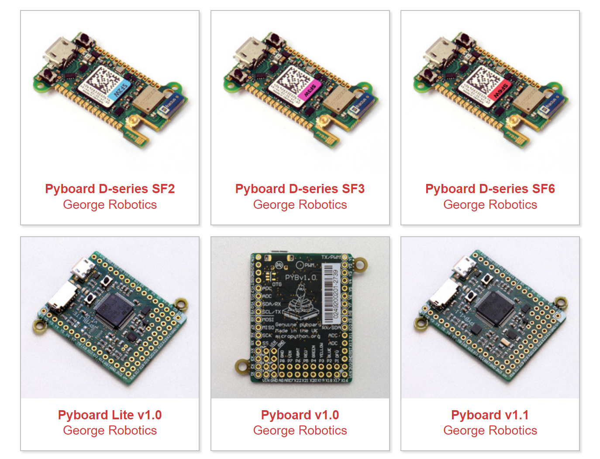
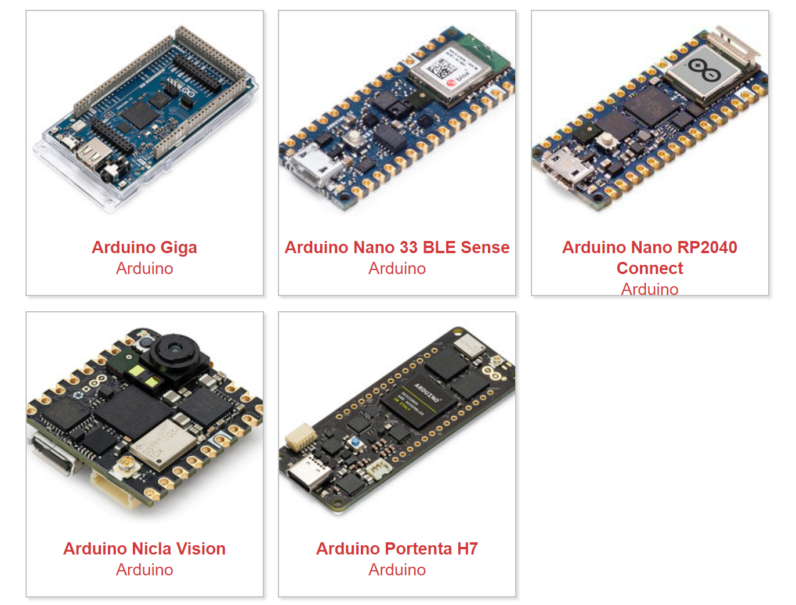
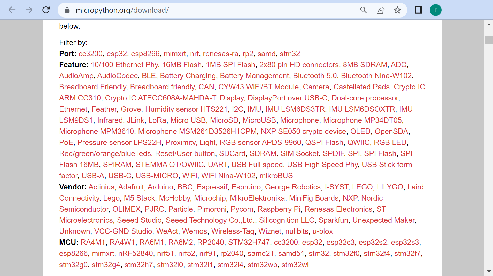
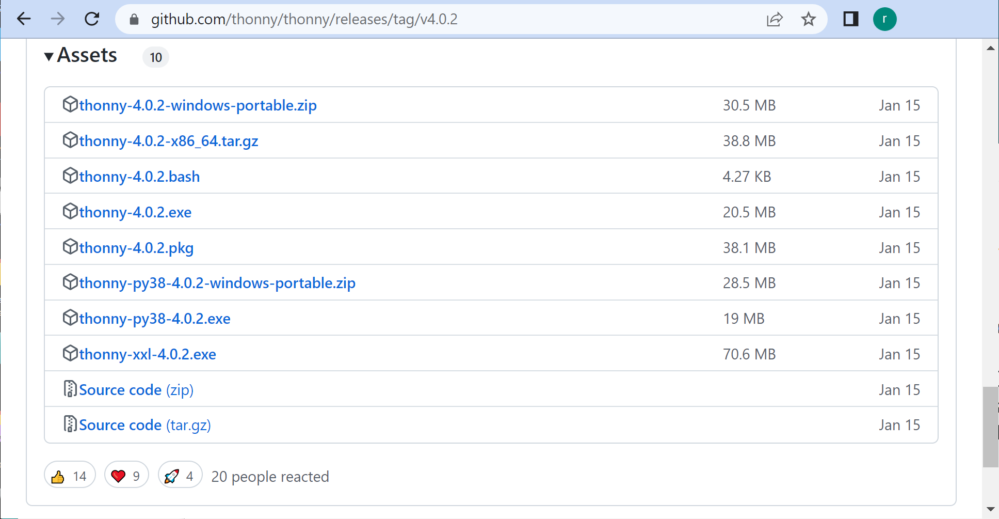
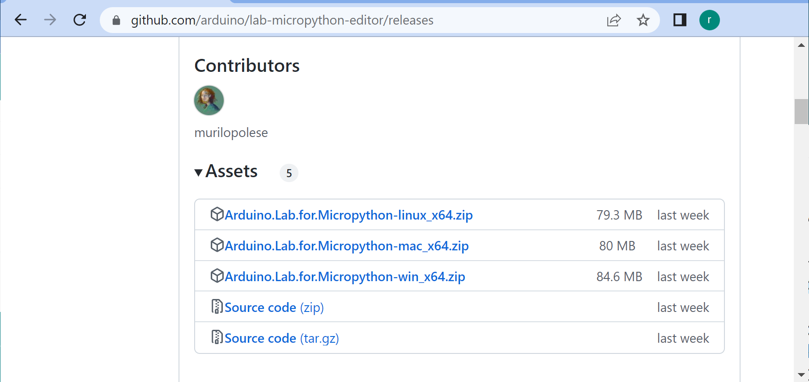
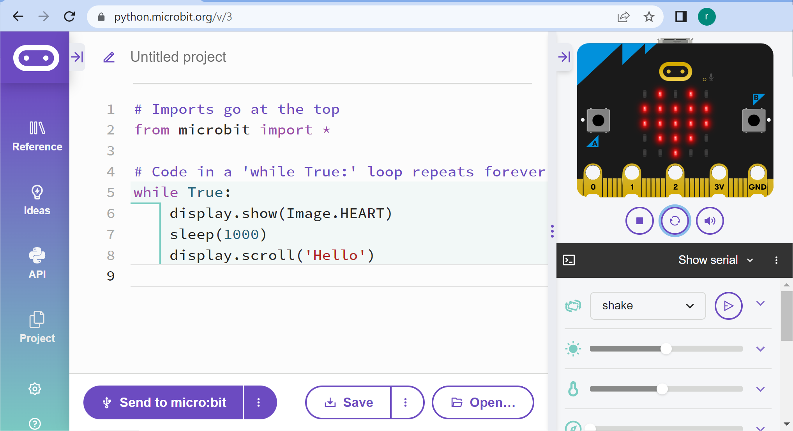
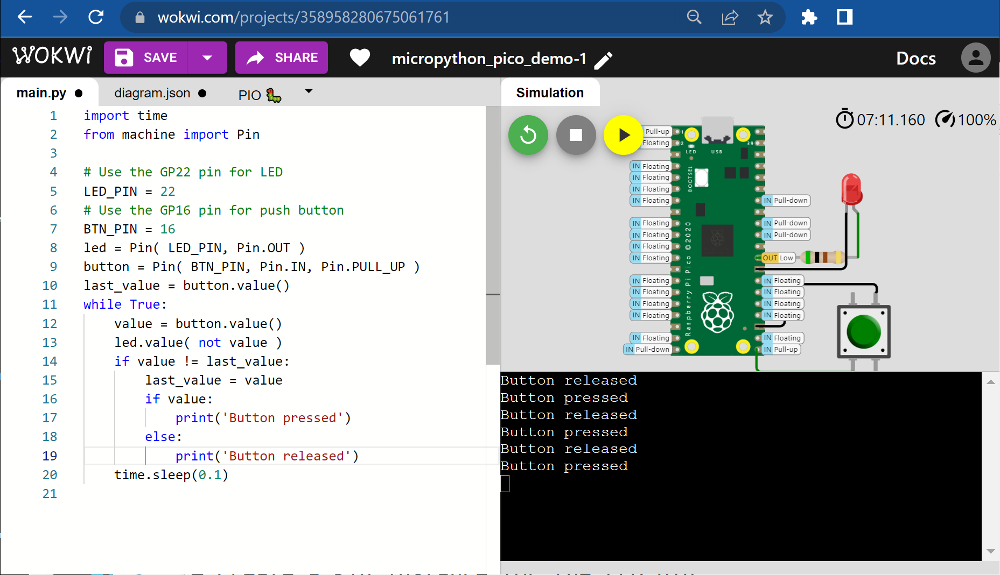

แนะนำการเขียนโค้ดสำหรับไมโครคอนโทรลเลอร์ด้วย MicroPython#
Keywords: Python 3, Microcontrollers, MicroPython, Cyber-Physical Computing
▷ มาทำความรู้จักกับไมไครไพธอน#
ไมโครไพธอน (MicroPython) เป็นซอฟต์แวร์ประเภท Open Source (MIT license) ทำหน้าที่เป็นเฟิร์มแวร์สำหรับการรันโค้ดไพธอนภายในชิปไมโครคอนโทรลเลอร์ (Python Run-Time Interpreter) แม้ว่าไมโครไพธอนจะมีข้อจำกัดอยู่บ้างและมีความสามารถได้ไม่เท่า Python3 (CPython) ที่ใช้งานได้กับคอมพิวเตอร์ทั่วไป แต่ช่วยให้เราสามารถเขียนและรันโค้ดไพธอนได้
การเลือกใช้ไมโครไพธอนเป็นภาษาคอมพิวเตอร์แรกในการเขียนโค้ด ก็อาจช่วยทำให้การเรียนรู้โค้ดดิ้ง (Coding) และการใช้งานไมโครคอนโทรลเลอร์สำหรับผู้เริ่มต้น ทำได้ง่ายขึ้น เมื่อเปรียบเทียบกับการใช้ภาษา C/C++
ไมโครไพธอนทำให้ผู้ใช้สามารถเขียนโค้ด Python 3 เพื่อเข้าถึงและใช้งานวงจรหรือฮาร์ดแวร์ภายในชิปไมโครคอนโทรลเลอร์ได้ง่ายขึ้น เช่น วงจรภายในประเภท GPIO, Timer, SPI, I2C, UART, ADC, DAC และ Wi-Fi เป็นต้น
การเขียนโค้ดไพธอนสำหรับฮาร์ดแวร์ อาจมีตัวเลือกอื่นที่ไม่ใช่บอร์ดไมโครคอนโทรลเลอร์ และสามารถนำมาเป็นสื่อการเรียนรู้ทางด้าน Physical Computing และ Cyber-Physical Computing ได้ เช่น บอร์ด Raspberry Pi (RPi) ซึ่งเป็นคอมพิวเตอร์บอร์ดเดี่ยว (Single-Board Computer: SBC)
บอร์ด RPi มีขา Pin Headers และเชื่อมต่อกับอุปกรณ์อื่นได้ โดยใช้ I2C, SPI, PWM, UART/Serial เป็นต้น และสามารถเขียนโปรแกรมได้โดยใช้ Python 3 โดยใช้ไลบรารีที่เกี่ยวข้อง
แต่เนื่องจากบอร์ด RPi มีราคาแพงกว่าบอร์ดไมโครโทรลเลอร์ทั่วไป และมีโอกาสชำรุดเสียหายได้ง่ายกว่า หากต่อวงจรอิเล็กทรอนิกส์ไม่ถูกต้อง จึงถือว่าเป็นความเสี่ยง แต่ถ้าเลือกใช้บอร์ดไมโครโทรลเลอร์ ก็จะมีค่าใช้จ่ายน้อยกว่า และจัดหามาใช้ได้ในจำนวนที่มากกว่าสำหรับงบประมาณที่เท่ากัน
▷ ประวัติความเป็นมาของไมไครไพธอน#
การพัฒนาไมโครไพธอนเพื่อทำให้ผู้ใช้สามารถเขียนโค้ดในภาษา Python กับบอร์ดไมโครคอนโทรลเลอร์ได้ เริ่มต้นโดย Damien P. George เมื่อเขาได้ทำงานเป็น Post-Doctoral Fellow และทำวิจัยด้านอนุภาคพลังงานสูงในมหาวิทยาลัย Cambridge ประเทศอังกฤษ ต่อมาในปีค.ศ. 2014 เขาได้ก่อตั้งบริษัท George Robotics Limited และได้พัฒนาบอร์ดไมโครคอนโทรลเลอร์ 32 บิต และสร้างบอร์ดรุ่นแรกที่มีชื่อว่า PyBoard ที่มีชิป STM32F405RG (Arm Cortex-M4F, 168MHz, 1023KB Flash, 192 RAM) และได้นำมาทดลองใช้กับไมโครไพธอน
เขาได้เปิดการระดมทุนใน Kickstarter โดยใช้ชื่อโครงการว่า "MicroPython: Python for microcontrollers" ทำให้ได้ผู้เข้าร่วมและสนับสนุนไปเกือบ 2,000 ราย และระดมทุนเงินสูงเกือบ £98,000
CircuitPython ของบริษัท Adafruit Industries ก็เป็นหนึ่งตัวอย่างที่ได้มีการนำโค้ด MicroPython ใช้เป็นพื้นฐานในการพัฒนาและแยกออกไป อีกตัวอย่างหนึ่งคือ OpenMV ก็ได้มีการนำโค้ดของไมโครไพธอนไปพัฒนาต่อยอด เน้นการใช้งานด้านการประมวลผลภาพ และ "แมชชีนวิชั่น" (Machine Vision) เป็นต้น
ในปัจจุบันได้ การพัฒนาไมโครไพธอนยังเกิดขึ้นอย่างต่อเนื่อง และได้มีการนำโค้ดของไมโครไพธอนไปปรับใช้กับชิปและบอร์ดไมโครคอนโทรลเลอร์รุ่นต่าง ๆ เช่น
- STM32
- ATSAMD21 / ATSAMD51
- RP2040 (Raspberry Pi Pico, Arduino Nano RP2040 Connect)
- nRF51822 (BBC Micro:bit v1) / nRF52833 (BBC Micro:bit v2)
- ESP32 / ESP32-S2 / ESP32-S3 / ESP32-C3

รูป: ตัวอย่างบอร์ดไมโครคอนโทรลเลอร์ STM32 ของ George Robotics Limited

รูป: ตัวอย่างบอร์ดไมโครคอนโทรลเลอร์ของ Arduino.cc ที่รองรับการใช้งานไมโครไพธอน
▷ รูปแบบการเขียนไมไครไพธอนสำหรับบอร์ดไมโครคอนโทรลเลอร์#
ในการเขียนโปรแกรมด้วยไมโครไพธอนเพื่อใช้งานกับบอร์ดไมโครคอนโทรลเลอร์ ผู้ใช้จะต้องเลือกใช้ไฟล์เฟิร์มแวร์ของไมโครไพทอน ให้ถูกต้องสำหรับบอร์ดไมโครคอนโทรลเลอร์เป้าหมาย (สามารถดาวน์โหลดไฟล์ได้จากเว็บไซต์ https://micropython.org/download/)

รูป: เว็บไซต์สำหรับเลือกไฟล์เฟิร์มแวร์ของไมโครไพธอน โดยจำแนกตามชิปและบอร์ดที่ได้เลือกใช้
- MicroPython firmware for Pico / Pico-W
- MicroPython firmware for ESP32
- MicroPython firmware for ESP32-C3
โดยทั่วไปก็เป็นไฟล์ .hex หรือ .uf2 (ซึ่งขึ้นอยู่กับวิธีการอัปโหลดไฟล์เฟิร์มแวร์ไปยังบอร์ดไมโครคอนโทรลเลอร์)
เมื่อได้ดาวน์โหลดไฟล์มาแล้ว ก็นำไปติดตั้งลงในชิปของบอร์ดไมโครคอนโทรลเลอร์เป้าหมายก่อนเริ่มต้นใช้งาน
แม้ว่าไมโครไพธอนจะนำไปใช้ได้กับบอร์ดไมโครคอนโทรลเลอร์ที่แตกต่างกัน และมีการจัดทำไลบรารี หรือ API ไว้ให้ใช้งานได้เหมือนกัน แต่ก็มีความแตกต่างอยู่ในหลายกรณี และมีฟังก์ชันที่ทำงานได้เฉพาะเจาะจงกับไมโครคอนโทรลเลอร์เป้าหมาย เช่น การเชื่อมต่อเครือข่ายไร้สาย WiFi / BLE และการเชื่อมต่อเครือข่ายด้วย Ethernet MAC / PHY
แต่ถ้าเป็นบอร์ดไมโครบิต (BBC Micro:bit v1 & v2) แม้ว่าจะใช้เขียนโค้ดด้วยไมโครไพธอนได้ แต่คำสั่งต่าง ๆ ของ API ก็มีความแตกต่างและเจาะจงใช้สำหรับบอร์ดทั้งสอง ศึกษารายละเอียดได้จาก Micro:bit Micropython API (v1) และ Micro:bit Micropython API (v2))
เนื่องจากชิปไมโครคอนโทรลเลอร์ มีข้อจำกัดเรื่องหน่วยความจำ ดังนั้นจึงมีการสร้างไลบรารีใหม่จำนวนหนึ่ง
(เรียกโดยรวมว่า MicroPython Libraries)
และฟังก์ชันให้ใช้งานได้เหมือนกรณีของ
Python 3 Standard Libraries แต่อาจมีฟังก์ชันไม่ครบ
นอกจากนั้นแล้ว ได้มีการตั้งชื่อไลบรารี ให้เริ่มต้นด้วยตัวอักษร 'u'
เช่น utime, usys, uos, ustruct
เป็นต้น เพื่อให้สังเกตเห็นความแตกต่าง แต่ทางผู้พัฒนาก็ได้พยายาม นำไลบรารีหรือโมดูลต่าง ๆ ของ CPython
มาปรับให้สามารถใช้กับไมโครไพอนได้ สามารถดูรายการของไลบรารีที่ใช้ได้จาก Micropython-Lib
ในการเขียนโค้ดไมโครไพธอน ผู้ใช้สามารถใช้ซอฟต์แวร์ประเภท IDE ได้เหมือน Python Editor แต่ก็มีความแตกต่าง เช่น คอมพิวเตอร์ของผู้ใข้จะต้องสื่อสารกับไมโครไพธอนที่ทำงานโดยใช้บอร์ดไมโครคอนโทรลเลอร์ โดยจะต้องสื่อสารผ่านทางพอร์ต USB (ใช้ USB-to-Serial หรือ USB-CDC) ทำงานในลักษณะโต้ตอบได้ (interactive) หรือเรียกรูปแบบนี้ว่า REPL (Read, Eval, Print, Loop)
โปรแกรมที่แนะนำให้ลองใช้งานสำหรับเขียนโค้ดไมโครไพธอน เช่น

รูป: ไฟล์สำหรับการติดตั้งใช้งาน Thonny IDE (v4.0.2)

รูป: ไฟล์สำหรับการติดตั้งใช้งาน Arduino Lab MicroPython Editor
นอกจาก Desktop IDEs / Editors สำหรับการเขียนโค้ดไมโครไพธอนแล้ว ยังมีตัวเลือกอื่นอีก ได้แก่ซอฟต์แวร์ที่เป็น Online / Web-based IDE เช่น
- MicroPython Editor for BBC Micro:bit: สามารถเขียนโค้ดและจำลองการทำงานเสมือนจริงได้ แต่ใช้ได้เฉพาะบอร์ดไมโครบิต และแนะนำให้ใช้กับบอร์ดไมโครบิต v2 (nRF52833) เนื่องจากมีความสามารถและหน่วยความจำมากกว่าบอร์ดไมโครบิต v1 (nRF51822)
- Wokwi Simulator สามารถใช้ได้กับบอร์ด Raspberry Pi Pico และบอร์ดไมโครคอนโทรลเลอร์ ESP32 และ ESP32-S2

รูป: ตัวอย่างการใช้งาน MicroPython Editor (v3) for BBC Micro:bit

รูป: ตัวอย่างการใช้งาน Wokwi Simulator for MicroPython-RP2040 (Pico)
▷ กล่าวสรุป#
บทความนี้ได้นำเสนอไมโครไพธอนเป็นตัวเลือกหนึ่งที่น่าสนใจ เพื่อนำไปใช้เป็นภาษาคอมพิวเตอร์สำหรับผู้ที่สนใจเรียนรู้ด้านระบบสมองกลฝังตัว และการเขียนโปรแกรมควบคุมการทำงานของไมโครคอนโทรลเลอร์ และก็มีบอร์ดไมโครคอนโทรลเลอร์ที่นำมาใช้ได้กับไมโครไพธอนอยู่หลายตัวเลือก
This work is licensed under a Creative Commons Attribution-ShareAlike 4.0 International License.
Created: 2023-03-12 | Last Updated: 2023-03-12